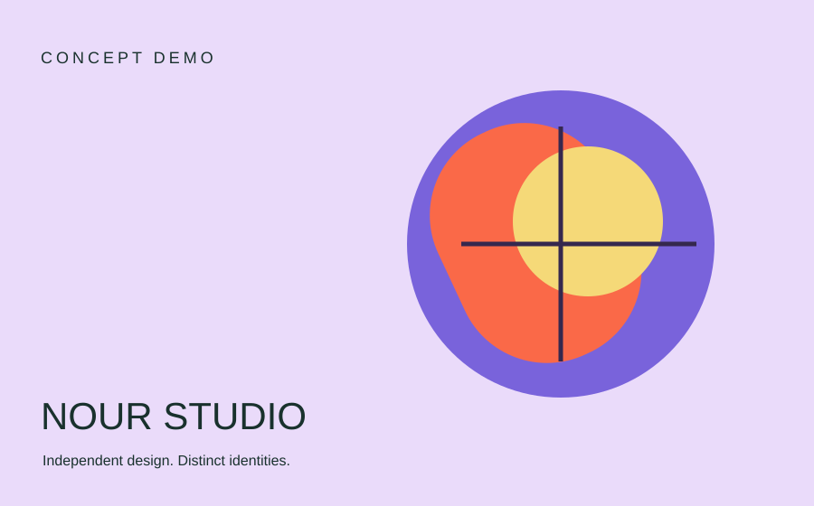

Brand identity
Arc / Identity
A geometric visual language for a fictional architecture studio.
Visual identities and digital experiences with a clear point of view. A designer portfolio concept, built to let the work speak.
See selected work ↘
A geometric visual language for a fictional architecture studio.
An editorial digital direction for a fictional design journal.
A color-led identity concept for a fictional lifestyle collection.
This sample portfolio demonstrates project presentation, typography and responsive design. All brands and studies shown are fictional concepts created for this demo.